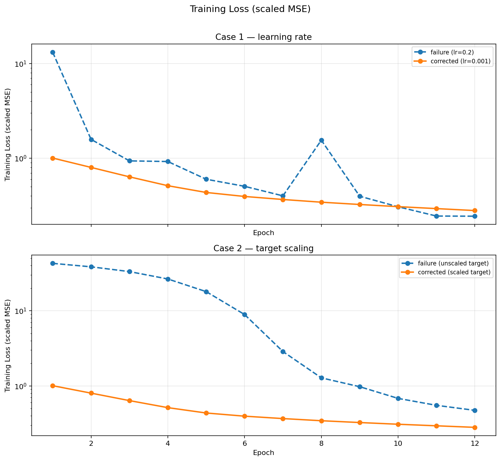
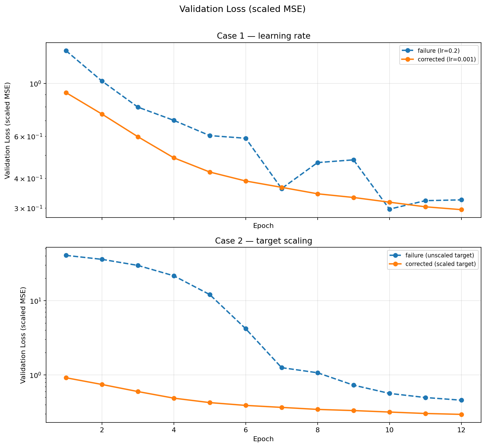
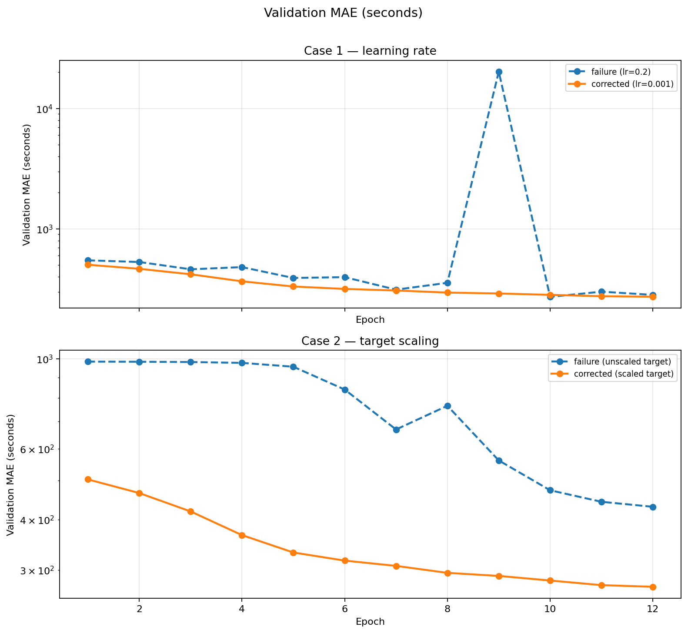

Name: Brandon Jackson
Semester: Summer 2026
Course: Deep Learning (CS 6320)
Dataset: Week 4 prepared NYC Yellow Taxi
trip-duration Parquet
(week04_tlc_trip_duration_smoke_10k.parquet locally; full
file on CHPC).
Prediction task: Regress
target_log_duration (log1p of trip seconds).
Report validation MAE in seconds after
expm1.
Features: pickup_location_id,
dropoff_location_id, pickup_hour,
pickup_day_of_week (embeddings);
pickup_day_of_month, trip_distance,
passenger_count (standardized numeric).
Split: Prepared temporal split column
(train 70% / validation 15% /
test 15%) — no random re-split.
Model: Small MLP with categorical embeddings (64 hidden units), Adam optimizer, mini-batches of 512.
Seed / reproducibility: 6320 (fixed
across all four runs). Validation metrics drive model selection each
epoch; test split is held out and not used in these debugging runs.
GPU/CUDA may introduce minor run-to-run nondeterminism, but cases are
compared under the same seed and code path.
Implementation:
scripts/train_debugging_experiments.py, adapted from
Assignment 3’s visible loop (forward → loss → backward → step →
validation each epoch).



Figures 1–3: Paired before/after learning curves (one panel per failure case) with log-scaled y-axes so failure and correction runs are readable on the same scale.
| Experiment | Controlled change | Final val MSE | Final val MAE (s) | Notes |
|---|---|---|---|---|
case1_high_lr_failure |
lr = 0.2 |
0.324 | 282.7 | Unstable; epoch-9 MAE spike |
case1_lr_corrected |
lr = 0.001 |
0.295 | 272.9 | Smooth improvement |
case2_unscaled_target_failure |
no target scaling | 0.458 | 430.6 | Slow, poor seconds MAE |
case2_scaled_target_corrected |
standardized log target | 0.295 | 272.9 | Matches stable training |
Shared settings (all four runs unless noted): Adam optimizer; batch size 512; hidden dim 64; embedding dim 16; 12 epochs; prepared temporal split; numeric inputs standardized; seed 6320; validation MAE in seconds reported each epoch.
| Report field | Content |
|---|---|
| Experiment setting | Same MLP, data, batch size (512), target/numeric scaling, and seed (6320); only change is learning rate = 0.2 (vs default 0.001). |
| Expected behavior / test intent | Deliberately test whether an oversized Adam step would produce unstable or oscillating train/validation curves rather than smooth descent. |
| Failure signal | Validation MAE became unstable and spiked to 20,226 s at epoch 9; training loss oscillated (e.g., 0.40 → 1.55 → 0.40 between epochs 7–8). |
| Evidence (before) | case1_high_lr_failure_history.csv; Figure 3 (Case 1
panel) shows the MAE spike; Figure 1 (Case 1 panel) shows non-monotonic
training loss. |
| Diagnosis | Adam step size was too large for the scaled MSE objective and embedding+MLP landscape, causing overshoot and unstable updates. |
| Controlled change | Reduce learning rate from 0.2 → 0.001 only; hold all other settings fixed. |
| Evidence (after) | case1_lr_corrected_history.csv; validation MAE improved
steadily 503 → 273 s with no spikes (Figure 3, Case 1
panel). |
| Before / after comparison | Failure run: unstable curves and catastrophic epoch-9 MAE despite epoch-12 MAE 282.7 s looking acceptable. Corrected run: monotonic improvement and stable validation. |
| Limitation | High learning rate still partially converged by epoch 12 on the smoke subset; instability—not total divergence—was the diagnosable failure mode. |
What I learned: A single hyperparameter can produce misleading “okay” aggregate metrics while hiding catastrophic single-epoch validation behavior. Learning-curve plots exposed a spike that a final-epoch table alone would understate.
| Report field | Content |
|---|---|
| Experiment setting | Same MLP, learning rate (0.001), batch size, and
seed; only change is no standardization of
target_log_duration before MSE (train mean/std
scaling disabled). |
| Expected behavior / test intent | Test whether optimizing on unstandardized log-duration targets would produce misleading loss descent and poor seconds MAE because gradient scale would not match standardized numeric inputs. |
| Failure signal | Training on unstandardized log-duration targets produced slow loss descent and poor final validation MAE (430.6 s) despite falling MSE. |
| Evidence (before) | case2_unscaled_target_failure_history.csv; Figure 2
(Case 2 panel) shows higher validation loss; Figure 3 (Case 2 panel)
shows MAE stuck above the corrected run. |
| Diagnosis | Without standardizing the regression target, gradient magnitudes were poorly matched to the scaled numeric inputs and embedding outputs (same issue family as Assignment 3’s raw-seconds training). |
| Controlled change | Standardize target_log_duration using train
mean/std before MSE; convert back for seconds MAE
reporting. |
| Evidence (after) | case2_scaled_target_corrected_history.csv; validation
MAE improved 503 → 273 s across 12 epochs (Figure 3,
Case 2 panel). |
| Before / after comparison | Failure run: high initial loss, slow improvement, final val MAE 430.6 s. Corrected run: lower starting loss and final val MAE 272.9 s with aligned train/val descent. |
| Limitation | Smoke 10k drives Figures 1–3; CHPC full run (job 1442745) confirmed pipeline at scale with a different Case 2 pattern (see CHPC note). |
What I learned: Preprocessing is part of training stability. A descending loss on the wrong target scale can look like progress while seconds MAE remains practically poor.
bash run_smoke_test.shlogs/run_smoke.logoutputs/*_history.csv,
outputs/*_summary.json, outputs/plots/*.png,
outputs/experiment_manifest.jsonSmoke test —
sbatch run_week04_smoke_test.slurm (job
1442471, 10k rows; learning curves in Figures 1–3):
| Item | Value |
|---|---|
| Node / GPU | grn077, NVIDIA RTX PRO 6000 Blackwell, CUDA |
| Logs | logs/slurm-smoke-1442471.out, .err |
Full prepared dataset —
sbatch run_week04_tlc_debugging.slurm (job
1442745, ~8.5M rows):
| Item | Value |
|---|---|
| Node / GPU | grn077, CUDA |
| Logs | logs/slurm-full-1442745.out, .err (empty —
no errors) |
| Case 1 failure | Train/val MSE stuck ~1.0; val MAE ~478 s flat — model failed to learn |
| Case 1 corrected | Val MAE 503 → 218 s |
| Case 2 (full) | See note below |
Both jobs completed all four experiments and regenerated
outputs/plots/. The smoke-run curves in
this writeup best illustrate Case 1’s epoch-9 MAE spike and Case 2’s
preprocessing failure; the full run confirms the same
pipeline at scale and shows Case 1 high-LR as stagnant
learning rather than a single spike.
Case 2 note (full vs smoke): On smoke 10k, unscaled targets clearly hurt (final val MAE 430 vs 273 s). On the full dataset, unscaled training reached a lower final val MAE (178 s) but epoch-1 train MSE was 0.80 vs 0.17 scaled, and the scaled run showed validation loss rising after epoch 5 while train loss kept falling — a separate generalization warning. Smoke evidence remains the primary before/after for the preprocessing fix.
Help a hobby retailer estimate whether a new or upcoming board game is likely to reach a practical BoardGameGeek average rating ≥ 7.0 using information available before stable community ratings exist (design metadata and text), so stocking decisions can be made at announcement / preorder time.
Stakeholder: hobby retailer or buyer curating inventory for BGG-aware customers.
Decision: preorder / initial stock vs pass — based on predicted eventual community reception, not same-day ratings.
Prediction moment: during the announced / preorder window — often years before official market release once a BGG page exists, and before sufficient rating votes accumulate.
| Item | Lock |
|---|---|
| Source | Kaggle Board Games Database from BoardGameGeek
(threnjen/board-games-database-from-boardgamegeek) |
| Unit | One row per game (~21,925 in Assignment 2 scan) |
| Access | Kaggle API token verified in Assignment 2 (games.csv
downloads and parses) |
| License / use | Course and research use under Kaggle terms; not commercial BGG API replacement |
| Consent | Public aggregated game metadata; no individual human subjects |
| Constraints | No live scraping; document voter-selection bias and Kaggle snapshot date |
high_rating = 1 if
AvgRating >= 7.0, else 0Include (v1): YearPublished,
MinPlayers, MaxPlayers, manufacturer/community
playtime fields, age recommendations,
GameWeight (complexity — design metadata,
not a rating outcome), encoded mechanics and
categories (after join deduplication), and raw
Name and
Description.
Hard exclude (target / direct rating leakage):
AvgRating, BayesAvgRating,
StdDev, NumRatings, UsersRated,
RatingRank, and any column derived from those fields. These
encode the answer or post-hoc rating mechanics and must never enter
X.
Exclude (community-demand fields):
NumOwned,
NumWant, and
NumWish.
NumOwned: not available before release
— ownership requires copies in circulation.NumWant / NumWish: a BGG
page can exist years before market release, but the Kaggle snapshot
stores cumulative totals at export time, not counts
frozen at the preorder decision moment. Using these columns in training
treats later accumulated want/wish activity as if it were known
pre-release — a prediction-time timing mistake, not a field
that is literally unavailable on the page. Without time-stamped
want/wish values, these columns stay out of X.Text encoding (v1): simple features from
Name and Description (e.g., length/token
counts or bag-of-words for baselines; richer text only if baselines
justify it).
| Risk | Consequence | Mitigation |
|---|---|---|
| Rating-derived columns in X | Trivial accuracy inflation | Hard exclude: AvgRating, BayesAvgRating,
StdDev, vote/rank fields |
Community-demand fields (NumOwned,
NumWant, NumWish) |
Snapshot conflates later cumulative counts with pre-release inputs | Exclude all three from X |
| Title / description memorization | Famous franchises may dominate signal | Keep Name / Description in v1; monitor
slice errors and compare to tabular-only ablation |
| Mechanics join duplication | Inflated feature rows | One-hot with dedupe rules |
| Train/test franchise leakage | Optimistic metrics | Hold out by game; consider publisher/franchise groups |
| Concern | Evidence / plan |
|---|---|
| Missingness | ~40 metadata columns ≥50% non-missing (A2 scan); document per-column rates in prep manifest |
| Imbalance | ~27% positive — report precision/recall/F1, not accuracy alone |
| Representativeness | BGG voters are self-selected enthusiasts; model describes BGG reception, not universal appeal |
| Snapshot bias | Kaggle mirror is static; newer releases may be underrepresented |
Neural model only if classical baselines plateau on held-out games.
Gradient-boosted trees on encoded
mechanics/categories, numeric metadata, GameWeight, and
simple Name/Description features — strong
default for heterogeneous tabular data with imbalance.
| Metric | Why |
|---|---|
Precision / recall / F1 on
high_rating |
Imbalanced binary task |
| ROC-AUC | Threshold-independent ranking quality |
| Confusion-matrix costs | False “stock” vs false “skip” for retailer story |
Split: hold-out by game (stratified if possible);
consider time-based slice by YearPublished for “new game”
realism checks in later weeks.
| In scope | Out of scope (v1) |
|---|---|
Tabular metadata + mechanics/categories +
GameWeight |
Complexity/weight as primary target (still predicting rating bar) |
Name / Description with simple text
encoding |
Heavy transformer / embedding pipelines unless baselines plateau |
| Classical + optional small NN comparison | Production store API integration |
| Error analysis by publisher/year slices | Individual consumer recommender app |
| Criterion | Success looks like |
|---|---|
| Clean prep with documented leakage exclusions | Reproducible manifest + feature list |
| Classical baseline beats majority class meaningfully | F1 / ROC-AUC clearly above trivial floor |
| Honest evaluation on held-out games | No franchise leakage in split |
| Clear stakeholder recommendation | Evidence-limited “stock / skip / review” framing |
| Responsible-use documented | No overclaim of universal quality |
Not required: beating state-of-the-art BGG prediction; deployment-ready system.
College Scorecard (institution debt-to-earnings burden) remains feasible (Assignment 2 scan) if BGG signal is too weak after leakage cleanup or joins stall. Fallback still answers a stakeholder screening question honestly.
In-project fallback: narrow to “recent releases only” or binary target tweak only with instructor approval; simplify to logistic regression if tree pipelines over-run scope.
| Stage | Plan | Evidence to collect |
|---|---|---|
| Baseline | Majority + logistic regression | F1, ROC-AUC, confusion matrix |
| Initial candidate | Gradient-boosted trees on tabular features | Compare to logistic; slice by year/publisher |
| Revised / alternative | Small neural net or simpler logistic if trees suffice | Show whether added complexity earns lift |
| Final recommendation | Pick model by evidence-limited stakeholder criterion | What error type matters more for retailer |
This week’s TLC debugging exercises do not count as the portfolio model — they inform training discipline only.
| Audit category | Entry | Week 5+ follow-up |
|---|---|---|
| Source / use | Kaggle BGG mirror; course/research use under Kaggle terms; not commercial API | Confirm snapshot date in manifest |
| Target / input timing | Predict eventual ≥7.0 from design metadata + text at
announcement/preorder time; hard exclude rating-derived columns; exclude
demand fields whose snapshot values are not timed to decision moment
(NumOwned, NumWant, NumWish) |
Time-split evaluation on recent-release cohorts |
| Missingness | ~40 columns ≥50% non-missing; mechanics join TBD | Per-column missing report in prep |
| Imbalance | ~27% positive | Report recall/F1; tune threshold for retailer costs |
| Representativeness | BGG enthusiast voters; English/market bias | Slice metrics by publisher size / year |
| Leakage / timing | Hard exclude rating-derived fields; exclude mis-timed demand counts;
include GameWeight,
Name/Description |
Automated feature-timing check in prep script |
| Responsible use | Screening aid only; human review required | Document in final memo |
Direction unchanged from Assignment 3; no dataset pivot required.
Tool: Cursor (Composer)
AI-assisted: Repo scaffolding, training/plot scripts, Slurm and README templates (adapted from the Week 4 course package and prior assignments), and first-draft writeup prose.
My work: Selected the failure/correction experiments; ran local smoke tests and CHPC jobs 1442471 and 1442745; checked all metrics and plots against saved logs; defined and locked the Part B feature policy and charter edits.
Certification: I certify that all work not described above is my own, and I verified AI-generated content for accuracy.